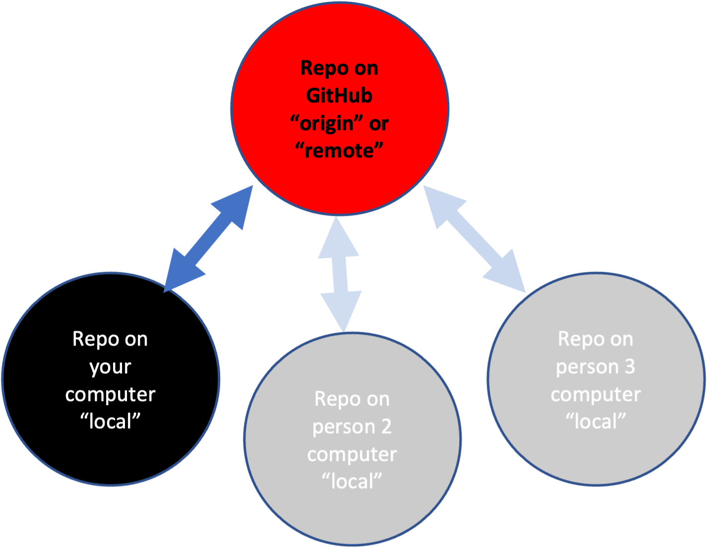
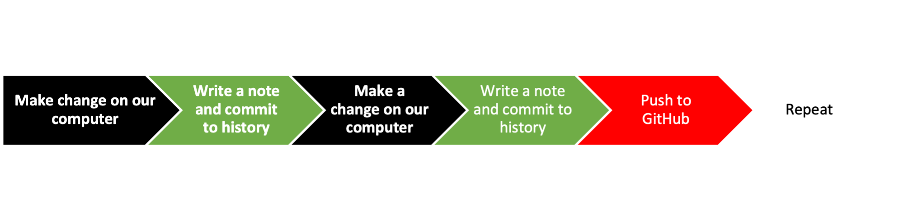
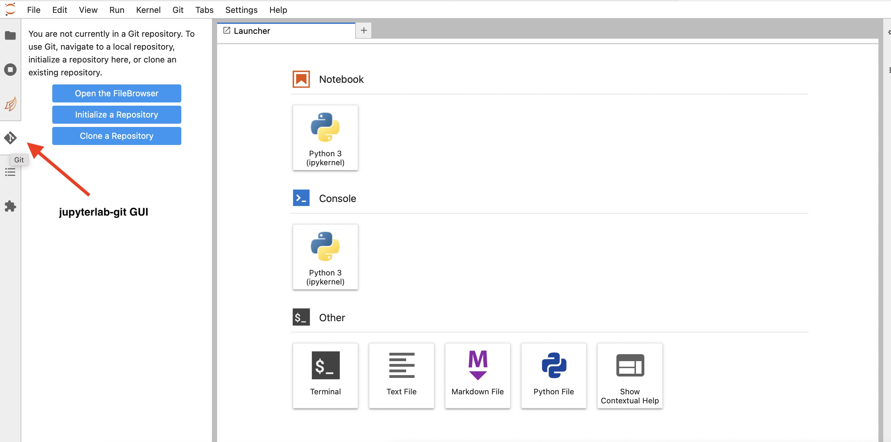

Basic Git/GitHub Skills Using jupyterlab-git
Contents
Basic Git/GitHub Skills Using jupyterlab-git#
Learning Objectives
Set up Git in the JupyterHub using First time
gitsetupLearn how to use the
jupyterlab-gitGUI in JupyterLabPractice 4 basic Git/GitHub skills: cloning, committing, push/pull
Important
Before we go over this tutorial we expect that you have already gone through this preparation material:
What is Git and GitHub?#
Git A program to track your file changes and create a history of those changes. Creates a ‘container’ for a set of files called a repository.
GitHub A website to host these repositories and allow you to sync local copies (on your computer) to the website. Lots of functionality built on top of this.
{width=200px}
Some basic Git jargon#
Repo Repository. It is your code and the record of your changes. This record and also the status of your repo is a hidden folder called
.git. You have a local repo and a remote repo. The remote repo is on GitHub (for in our case) is calledorigin. The local repo is on the JupyterHub.Stage Tell Git which changes you want to commit (write to the repo history).
Commit Write a note about what change the staged files and “commit” that note to the repository record. You are also tagging this state of the repo and you could go back to this state if you wanted.
Push Push local changes (commits) up to the remote repository on GitHub (
origin).Pull Pull changes on GitHub into the local repository on the JupyterHub.
Git GUIs A graphical interface for Git (which is command line). Today I will use
jupyterlab-gitwhich we have installed on JupyterHub.Shell A terminal window where we can issue
gitcommands.
Overview#
Today I will cover the four basic Git/GitHub skills. We will not work with branches today and I won’t cover much about merge conflicts. The goal for today is to first get you comfortable with the basic skills and terminology—and also get you set up on the JupyterHub. We will use what is called a “trunk-based workflow”.
Simple Trunk-based Workflow:#
Make local (on your computer) changes to code.
Record what those changes were about and commit to the code change record (history).
Push those changes to your remote repository (aka origin)
We’ll do this

Setting up Git#
Before we can work with Git in JupyterLab, we need to do some set up.
Tell Git who you are and to store your credentials (GitHub login info)
Get a Personal Access Token from GitHub
Copy the token! You will need it in the next step.
Trigger Git to ask for your password (that personal access token)
You will do this by cloning a private repo. Open a shell and issue this command
git clone https://github.com/snowex-hackweek/github_setup_check.git
It will ask for your GitHub username and password. At the password part, paste in the Personal Access Token.
jupyterlab-git#
When the instructions say to use or open or click on jupyterlag-git, click the icon in the left navbar marked by the red arrow.

The Key Skills#
Skill 1: Create a blank repo on GitHub
Skill 2: Clone your GitHub repo onto the JupyterHub
Skill 0: Open your repository in the JupyterLab.
Skill 3: Make some changes and commit those local changes
Skill 4: Push the changes to GitHub
Skill 1b: Fork someone else’s GitHub repository
Let’s see it done!#
Skill 1: Create a blank repo on GitHub#
Click the + in the upper left from YOUR GitHub page.
Give your repo the name
Testand make sure it is public.Click new and check checkbox to add the Readme file and
.gitignoreCopy the URL of your new repo. It’s in the browser where you normally see a URL.
Skill 2: Clone your repo to the JupyterHub#
Copy the URL of your repo.
https://www.github.com/yourname/TestClick on the
jupyterlab-giticon in the left navbar.You’ll see 3 boxes*, click on Clone Repository.
Paste the URL from in the box that pops up and paste in the URL from Step #1.
Your repo now appears in the list of folders.
Show me – Show me with the shell – Show me with Visual Studio Code
I don’t see those boxes. You are in a repository. Click on the little folder icon at top to get out of the current folder. See video (at the end).
Skill 3: Make some changes and commit your changes#
Make some changes to the README.md file in the Test repo.
Click the
jupyterlab-giticon, and stage the change(s) by rolling over the modified file and clicking the +.Open GitHub Desktop, click the little checkboxes next to the changes.
Add a commit comment, click commit.
Show me – Show me from the shell – Show me with Visual Studio Code
Skill 4: Push changes to GitHub / Pull changes from GitHub#
To push changes you committed in Skill #3
From jupyterlab-git, click on the little cloud with up arrow at the top (it’s kind of small).
Show me – Show me in the shell
To pull changes on GitHub that are not on your local computer:
Make some changes directly on GitHub
From jupyterlab-git, click on the little cloud with down arrow at the top (it’s kind of small).
Note in the shell, the command is
git pull.
Pair-activity 1#
In JupyterLab,
Make a copy of README.md
Rename it to
.md Add some text.
Stage and commit the added file.
Push to GitHub.
Do this from jupyterlab-git. You can also try from the shell if you watched the shell videos too.
Try before watching. Show me – Show me in the shell
Pair-activity 2#
All of this activity is in JupyterLab.
Clone this repo: https://github.com/snowex-hackweek/git-basics
Navigate to the repo, copy
Copyme.mdand rename to<yourname>.mdStage and then commit that new file.
Push to GitHub.
Make some more changes and push to GitHub.
Pull in your partner’s (and everyone elses) changes
Skill 1b: Fork a repo on GitHub#
You can copy other people’s repos but maintain a connection to the original (upstream) repo. In the hackweek, you will use this to get the tutorials and update them each morning.
In a browser, go to the GitHub repository you want to fork.
Click the little fork icon in the upper right corner.
Use Skill #1 to clone the forked repo to your computer.
Fetch changes from the original (upstream) using jupyterlab-git
From GitHub, click “Fetch upstream”
From JupyterLab, click on the
jupyterlab-giticon and click the cloud with down arrow, to pull in the changes to JupyterLab.
Fetch changes from the original (upstream) using the shell
See instructions here
Skill 1c: Copy a repo on GitHub#
You can copy your own or other people’s repos^[This is different from forking. There is no connection to the original repository.].
In a browser, go to the GitHub repository you want to copy.
Copy its url.
Navigate to your GitHub page: click your icon in the upper right and then ‘your repositories’
Click the
+in top right and clickimport repository. Paste in the url and give your repo a name.Use Skill #1 to clone your new repo to your computer
Pair-activity 2#
Fork https://github.com/snowex-hackweek/website2022 (GitHub)
Clone to JupyterHub (Skill #2)